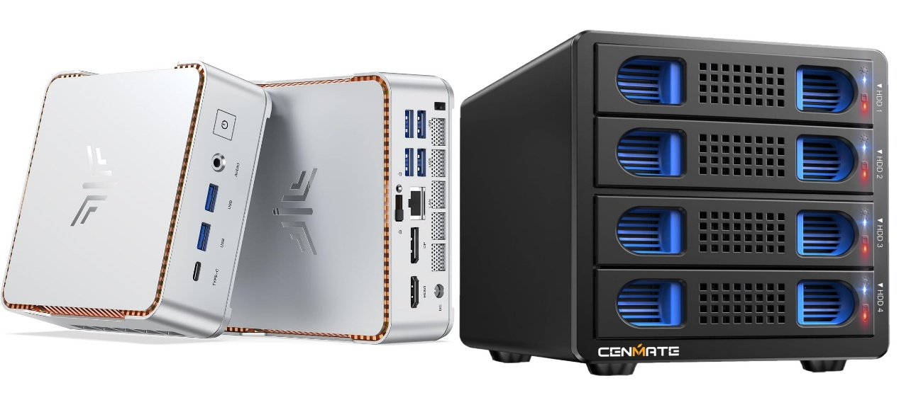
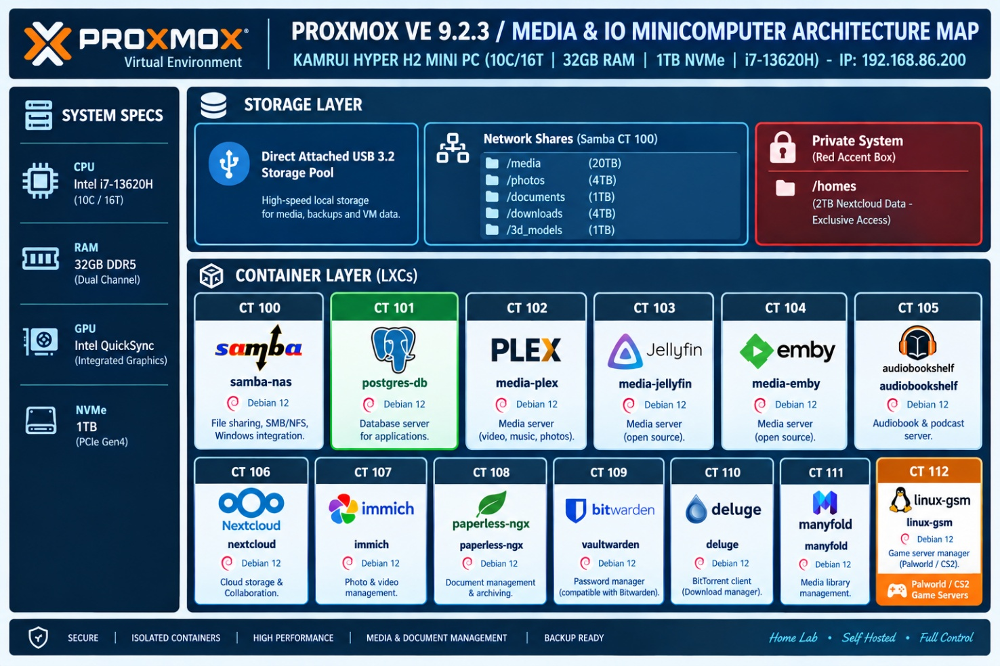

I wrote this analysis and design document for my Proxmox VE 9.2.3 media and I/O mini-computer architecture. I’m using it to prove the concept and start the first development cycle.
The Smart Home Edge System has two connected parts that work together as one complete home edge system. The first part is the compute module that contains all the centralized IT functions necessary to protect, operate and manage an in home Edge System. In this document, I focus on the second part that contains media and I/O portion, which runs on a single minicomputer. This computer will include an external USBC attached Disk enclosure with 2 - 20TB drives for storage and 2 empty slots for maintenance and backups. We are NOT proposing RAID configurations.
I’m proposing the CENMATE Aluminum 4 Bay 10Gbps Hard Drive Enclosure with Cooling Fan for 2.5”/3.5" SATA HDD/SSD with USB A/C 3.2 Gen 2, Support Hot Swappable, Tool-Free HDD Enclosure, DAS(NO RAID/NAS).
| Hardware Interface | USB 3.2 Gen 2 |
|---|---|
| Brand | cenmate |
| Product Dimensions | 7.95"L x 5.2"W x 5.75"H |
| Hardware Platform | Windows Mac Linux |
| Material | Aluminum |
I chose this item for the 4-bay enclosure (2 live and 2 backup slots) and USB 3.2 output interface for transfer speed. This enclosure will transfer 1G files in 3-5 seconds with USB 3.2 Ports, which is 20 times faster than USB 2.0. 4 HDDs will total a R/W speed of 1016MB/s with a 1 SSD-510MB/s R/W speed.
NOTE: Read and write speeds are determined by factors such as hard drive version, computer version, etc...
This enclosure will house 3.5 hard drives but also supports 2.5/3.5 inches HDD and SSD, max capacity up to 80TB(20TB for each hard drive), making it an ideal external hard drive enclosure
While the fan noise is a little excessive, I am planning on placing this inside of a Telcom/storage room away from daily access. Fan noise is around 40-50 decibels, not recommended if you are very near to the device. The noise is based upon the excessive power necessary to drive the 4-bay enclosure.
Hot swapping is required to make sure we do not disrupt the system due to maintenance. This will allow users to replace hard drives without powering off the device. This feature enhances convenience and efficiency in data transfer processes.

The minicomputer I’m using is the Proxmox server with the following HW characteristics:
KAMRUI HYPER H2 MINI PC (10C / 16T | 32GB RAM / up to 4.9GHz)
Proxmox VE 9.2.3 / Dedicated Ethernet / Intel Core i7-13620H
Integrated GPU: Intel UHD Graphics (13th Gen) / 1TB PCIe NVMe SSD
This is the same computer used for the Smart Home Edge System Compute module. By using the same computer, it makes sparing easier, if necessary. This computer is a mid-range mini-computer that ranges around $400 USD and fits well into the overall system design while taking up a small footprint. This model was chosen for its Graphics card which while not used for graphics is used for GPU passthu for AI functions in the Compute module and for Video transcoding in the Media&IO module. Having the same computer makes configuration of the GPU passthru much easier. At some point I may create a 3D printed enclosure that contains both compute modules and the 4-bay disk enclosure. That is forward work after the system is finalized. It may well be noted that I use a 3rd minicomputer as my personal workstation with 3 monitors. This is not part of the overall system but is worth mentioning.
========================================================================= |
|---|
Sizing
The Intel i7-13620H (6 Performance cores, 4 Efficient cores / 16 threads) combined with 32GB RAM provides plenty of room for all these workloads. Because LXCs share the host Linux kernel, CPU and RAM are provisioned as upper limits rather than hard allocations, allowing for safe overprovisioning.
To prevent container bloat and isolate compute from database operations, we use a dedicated PostgreSQL database container shared across Immich, Paperless-ngx, and Vaultwarden. This database can be used as a home database. There are a few containers available for the home including Homebox, Netbox, Grocy, Mealie and Uptime Kuma. Others can be loaded in this docker instance as needed for the home user.
We are sizing the LxC as follows to ensure system level performance needs are met.
LXC Sizing & Allocation Matrix
| CT ID | LXC Name | Base OS | vCPUs | RAM (GB) | Storage (GB) | GPU Passthrough | Notes / Mounting |
|---|---|---|---|---|---|---|---|
| 100 | samba-nas | Debian 12 | 2 | 1.0 | 16 | No | Bind mounts host storage / external pools |
| 101 | postgres-db | Debian 12 | 4 | 4.0 | 32 | No | Fast NVMe storage for Immich, Paperless, Vaultwarden needs pgvector extension |
| 102 | media-plex | Ubuntu 24.04 | 6 | 4.0 | 20 | Yes (/dev/dri) | QuickSync iGPU passthrough for transcoding |
| 103 | media-jellyfin | Ubuntu 24.04 | 6 | 4.0 | 20 | Yes (/dev/dri) | QuickSync iGPU passthrough |
| 104 | media-emby | Ubuntu 24.04 | 4 | 2.0 | 20 | Optional | Turn off transcode if duplicating Plex/Jellyfin |
| 105 | audiobookshelf | Debian 12 | 2 | 1.0 | 10 | No | Light metadata & audio streaming overhead |
| 106 | nextcloud | Debian 12 | 4 | 4.0 | 32 | No | Uses Redis inside LXC; DB points to CT 101 |
| 107 | immich | Ubuntu 24.04 | 6 | 6.0 | 32 | Yes (Optional) | Machine Learning (ML) benefits from iGPU/OpenCL |
| 108 | paperless-ngx | Debian 12 | 2 | 2.0 | 16 | No | Machine learning/OCR runs via shared CPU cores. Redis installes |
| 109 | vaultwarden | Alpine / Debian | 2 | 0.5 | 8 | No | Extremely lightweight (Rust-based) |
| 110 | deluge | Debian 12 | 2 | 1.0 | 16 | No | WireGuard VPN configuration encouraged |
| 111 | manyfold | Debian 12 | 2 | 1.0 | 10 | No | 3D model asset management Redis installed |
| 112 | linux-gsm | Ubuntu 24.04 | 8 | 4.0 | 100+ | No | Game servers (Palworld, CS2, Valheim) need raw disk |
Architectural Recommendations
1. Shared Database Strategy (Postgres LXC)
Set up a dedicated PostgreSQL instance on CT 101 instead of spinning up database sidecars inside individual containers. Install pgvector extension
Create isolated users and databases for Immich (immich_db), Paperless (paperless_db), and Vaultwarden (vaultwarden_db) as well as others per home instances desired.
2. Intel QuickSync iGPU Passthrough
- To enable hardware transcoding across media containers (Plex, Jellyfin, Emby) and OpenCL acceleration for Immich photo recognition, pass through the Intel UHD Graphics device to unprivileged LXCs: Add the following lines to /etc/pve/lxc/<CTID>.conf:
lxc.cgroup2.devices.allow: c 226:0 rwm
lxc.cgroup2.devices.allow: c 226:128 rwm
lxc.mount.entry: /dev/dri/renderD128 dev/dri/renderD128 none bind,optional,create=file
- Ensure the render group ID on the host matches the group ID assigned inside the LXCs (chown -R root:render /dev/dri/renderD128).
3. Storage & Bind Mounts
Root Disk: Keep container OS disks lean on the 1TB PCIe NVMe SSD.
Data Disks: Map bulk media storage, paperless document ingest paths, and torrent staging areas directly from the Proxmox host using bind mounts in /etc/pve/lxc/<CTID>.conf:
Plaintext
mp0: /mnt/pve/storage/media, mp=/mnt/media
can you provide anaylsis on this sizing - How much room is used and what would the nominal CPU/Memory load be
Resource Footprint
Analyzing the resource footprint of this architecture requires separating Base OS Overhead & Containers from Active Operational Workloads. Because LXC containers share the host Linux kernel, they consume virtually zero CPU or RAM when sitting idle, unlike traditional Virtual Machines.
1. Physical Storage Breakdown (1TB NVMe)
We have architecture the Base OS allocations to define the upper limits, but LXC root disks are thin-provisioned (only consuming the physical storage actually written).
Proxmox VE Base Hypervisor: ~15–20 GB
LXC Operating System Files: ~25 GB total across all 13 containers (~1.5–2.0 GB base OS footprint per container).
Application Binaries & Databases: ~15–30 GB (PostgreSQL data, Paperless OCR caches, Nextcloud app files, Immich ML models).
Base Footprint Total: ~60 – 75 GB physical usage on fresh setup (~925 GB free space remaining).
Doing a Storage Reality Check: The 1TB NVMe will easily house all OS disks, databases, index logs, and thumbnail caches. The actual media storage (Plex films, music, torrent staging, raw photos, Linux GSM game files) will outgrow 1TB quickly so we use external NAS shares (SMB/NFS) to host bulk storage via host bind mounts.
2. Memory (RAM) Analysis (32GB Total)
Proxmox VE (ZFS or ext4/LVM) uses ~2GB for host services and ARC cache.
| State | Nominal RAM Footprint | Details / Breakdown |
|---|---|---|
| Idle / Baseline | ~6.5 GB – 8.5 GB | Proxmox Host (2GB) + Shared Postgres (1.5GB) + Immich Server (1.5GB) + Media Servers & Nextcloud (2GB) + Other 8 LXCs (1.5GB). |
| Typical Daily Use | ~12 GB – 15 GB | Active Nextcloud sync, background torrent seeding, Vaultwarden active connections, background Paperless OCR jobs. |
| Peak Load | ~22 GB – 26 GB | Simultaneous Immich Machine Learning facial indexing + Linux GSM hosting heavy games (e.g., Palworld/Valheim) + active Plex transcoding. |
Our analysis determined that 32GB is the optimal "sweet spot" for this layout. We have ~6–10GB of head-room during peak operations to avoid invoking Out-Of-Memory (OOM) killers.
3. CPU Load & Core Utilization (Intel i7-13620H | 10C / 16T)
Because LXCs overprovision naturally, assigning 4–6 virtual cores per container doesn’t overload the system—CPU time is only used when actively executing tasks.
We determined the following high level system resource allocations:
Total Capacity: 23,200 PassMark Score (6 Performance Cores / 4 Efficient Cores)
[ Idle Load ] - 1% - 3% (~0.2 cores utilized)
[ Typical Load ] - 15% - 25% (~2 - 4 cores utilized)
[ Peak Load ] - 55% - 70% (~9 - 11 cores utilized)
Idle Load (1% – 3% CPU): When no users are actively streaming, transcoding, or ingesting files, all containers sit dormant. The host draws around 12–20W of wall power.
Nominal Daily Load (15% – 25% CPU): Background sync (Nextcloud), audio streaming (Audiobookshelf), small torrent downloads (Deluge), and low-volume database queries.
Peak Operational Load (55% – 70% CPU): Happens during specific spikes:
Immich Photo Ingest: Indexing new photos and generating vector embeddings triggers high CPU spikes if executed entirely on CPU. (Mitigated by mapping /dev/dri to Immich for iGPU OpenCL acceleration).
Paperless-ngx OCR: Processing multi-page PDFs using Tesseract temporarily maxes out assigned CPU threads.
Media Transcoding: Handled entirely by the Intel QuickSync iGPU. Up to 4–5 concurrent 4K HDR → 1080p transcodes run on the iGPU without pushing the CPU cores past 10–15% load.
Resource Summary
The KAMRUI HYPER H2 setup is exceptionally well-sized for this specific stack:
Memory Headroom: ~40–50% available during nominal use.
CPU Headroom: QuickSync offloads video processing, leaving the 10-core CPU free to handle background databases, game servers, and file indexing effortlessly.
Primary Bottleneck: Not CPU or RAM, but bulk storage capacity over time. Plan to bind-mount an external storage array, NAS, or secondary expansion drive for raw media.
Hardware Limitations
This allocation fits well within the hardware limits of the KAMRUI Hyper H2 (10-core i7-13620H, 32GB RAM, 1TB NVMe). LXCs share the host Linux kernel directly, so we avoid the overhead of full virtual machines.
Resource Utilization Breakdown
| Metric | Max Assigned (Matrix Summit) | Expected Idle / Idle Baseline | Average Load (Normal Use) | Peak Load (Transcode / Scanning / Gaming) |
|---|---|---|---|---|
| RAM Utilization | 31.5 GB (Allocated across 13 LXCs) | 4.5 GB - 6.5 GB | 10 GB - 14 GB | 18 GB - 22 GB |
| CPU Threads | 48 vCPUs (Overprovisioned across 16 threads) | 2% - 5% | 10% - 25% | 60% - 85% |
| Root Disk Storage | 302 GB (Base OS provisioning) | ~35 GB (Clean OS installs) | 80 GB - 120 GB (Metadata/Caches) | 200 GB+ (Excluding main media/files) |
Storage Analysis (1TB PCIe NVMe SSD)
Base Containers: The ~302 GB assigned across the LXCs acts as a max capacity ceiling for container operating systems and local application data (e.g., PostgreSQL indices, Paperless database, Immich thumbnails).
Real OS Footprint: Fresh Debian 12 / Ubuntu 24.04 LXC rootfs templates consume only ~1.5 GB to 2.5 GB of actual space each (~35 GB total upon initial deployment).
Metadata & Cache Drivers:
Plex/Jellyfin/Emby: Metadata, poster art, and preview thumbnails will quickly consume 20 GB to 50 GB. Transcode directories should be pointed to /tmp (RAM-backed tmpfs) rather than the NVMe drive to prevent flash wear.
Immich: Generates large quantities of compressed image thumbnails and vector embeddings (typically 15–30 GB for a moderate family photo collection).
Paperless-ngx: Stored OCR text indexes and archive documents scale depending on ingestion volume.
Storage Verdict: The 1TB SSD easily supports the Proxmox hypervisor, LXC root disks, app databases, and local metadata. However, bulk media (Plex/Jellyfin films, torrent downloads, Nextcloud files) must live on an external NAS, DAS, or mounted USB/Samba share.
Memory (RAM) Load Profile (32GB Total)
LXC RAM limits act as maximum safety boundaries rather than pre-allocated hardware blocks.
Idle Load (~5 GB):
Proxmox PVE Base OS: ~1.2 GB
PostgreSQL (CT 101): ~500 MB (idle cache pool)
Rust/Alpine apps (Vaultwarden, Audiobookshelf): < 100 MB each
Media servers (Plex, Jellyfin, Emby) with no active streams: ~300 MB each
Heavy NodeJS/Python platforms (Immich, Nextcloud, Paperless): 500 MB – 1 GB each
Active Day-to-Day Load (~12 GB - 16 GB):
- Occasional Nextcloud syncs, torrenting on Deluge, background indexing, and 1–2 media streams.
Peak Load (~20 GB - 22 GB):
- Immich runs face-recognition ML jobs + Paperless OCRs a batch of multi-page PDFs + LinuxGSM hosts an active multiplayer session.
Memory Verdict: You remain safely below the 32GB threshold with a healthy 10 GB+ buffer for Linux page caching.
CPU Load Profile (10 Cores / 16 Threads)
Proxmox will use CPU pinning or dynamic cgroup allocation, allowing smooth overprovisioning of thread limits across containers.
Nominal Daily Load (10%–25% CPU):
- The 4 Efficient cores (E-cores) handle background database routines, Samba file routing, torrenting, and Vaultwarden requests with negligible power draw.
Burst Operations (50%–85% CPU):
Immich & Paperless-ngx: Machine learning jobs (CLIP image searches, facial recognition, OCR text parsing) will briefly spike CPU usage across Performance cores (P-cores).
Linux GSM: Game server tick rates scale dynamically based on active player counts.
Transcoding Mitigation (iGPU QuickSync):
- Routing video processing through the Intel UHD Graphics device (/dev/dri/renderD128) keeps CPU utilization low during simultaneous 4K/1080p transcodes across Plex, Jellyfin, or Emby.
Design Decisions
Running Redis inside of Manyfold LxC
Running Redis inside the Manyfold LXC is significantly better for your Proxmox homelab setup.
Unlike central databases (like PostgreSQL), Redis in this context acts as a ephemeral key-value queue and background job broker (via Sidekiq/Rails) strictly for Manyfold’s internal tasks—such as 3D model parsing, thumbnail extraction, and background library rescans.
Comparison Summary
| Metric | Redis Inside Manyfold LXC | Standalone Redis LXC |
|---|---|---|
| Architectural Fit | Tight coupling: Acts as an extension of Manyfold's application worker process. | Overkill; adds container sprawl for a single-app job queue. |
| Network Overhead | Zero: Inter-process communication via 127.0.0.1 or unix socket. | Micro-latency over virtual bridge network (vmbr0). |
| Resource Usage | Negligible (~30–50 MB RAM bundled in CT 111). | ~100–250 MB RAM baseline (LXC base OS overhead + Redis). |
| Maintenance & Backup | Single LXC to back up, snapshot, update, or restore. | Separate LXC lifecycle management; breaking dependencies if down. |
Key Architectural Reasons
Redis Data is Ephemeral for Manyfold
Manyfold uses Redis to track active background workers generating 3D previews or indexing .stl/.3mf files.
If Redis crashes or resets, no persistent library metadata is lost (that data sits safely in your central PostgreSQL database on CT 101).
Low-Latency Inter-Process Communication
- Running Redis locally (127.0.0.1:6379) gives Manyfold's background tasks the lowest possible latency without generating extra internal network traffic across your Proxmox virtual bridges.
Prevents "Shared Redis" Data Collisions
Shared database instances (like PostgreSQL on CT 101) use logical schemas to separate apps safely.
Shared Redis instances, unless carefully configured with unique key prefixes and separate numeric database indices (/0, /1, /2), carry a risk of key collision across different applications.
Our Implementation
In CT 111 (manyfold LXC): We use a single Docker Compose file that bundles manyfold3d/manyfold and redis:alpine within the same LXC docker container context.
Database Pointer: Point DATABASE_URL outward to your shared PostgreSQL instance on CT 101 (postgres-db), and point REDIS_URL inward to redis://127.0.0.1:6379.
Manyfold Database Model
- PostgreSQL: Since we already have a shared PostgreSQL database container (postgres-db / CT 101) in your architectural matrix, we create a dedicated manyfold_db database and user on our existing instance.
1. Prevent Accidental Data Wipes (FLUSHALL Danger)
This automated bundle contains the baseline configurations, code layouts, and operational manifests tracked for this module.
👁️ Internal Asset Preview
All embedded diagrams, schematics, and configurations are packaged below. Click the button to download the full-resolution archive block.
- Paperless-ngx and Manyfold both use Redis via background job processors (Celery and Sidekiq). This will prevent issues if an administrative FLUSHDB or clearing command to reset its job queues
2. Automation & Media Pipeline ("Arr" Stack)
- Automation Managers (Sonarr / Radarr / Prowlarr / Bazarr): Deluge is simply a downloader. We are NOT using the Arr stack to download movies and tv shows since that imposes a legal risk.
3. Backup & Maintenance Infrastructure
To handle updates cleanly across our Proxmox stack without breaking core databases, we are using a hybrid strategy:
Application Type Recommended Tool Why Stateless / Utility Apps (Vaultwarden, Dashboard, Network Tools) Watchtower (or WUD / Diun) Runs directly on the Docker host via /var/run/docker.sock. Automatically pulls minor image updates and restarts containers with zero overhead (~20 MB RAM). This runs on both the Compute and Infotainment Modules. Stateful / Stateful Apps (PostgreSQL, Nextcloud, Immich, Paperless) Manual Upgrades (or Notification-Only via WUD/Diun) Major database or schema changes (e.g., PostgreSQL major versions, Immich breaking changes) should never be auto-updated. Review changelogs and update manually after running a Proxmox LXC snapshot.
We are running Watchtower inside LXC104 on the Compute Module and VM 113 on the Infotainment Module.
Operational & Design Adjustments
1. Storage Permissions & UID/GID Mapping (Unprivileged LXCs)
By default, Proxmox unprivileged containers map root (UID 0 inside the LXC) to an unprivileged ID (UID 100000 on the host).
If Samba, Deluge, Plex, Nextcloud, and Paperless all try to read and write to the same shared bulk media storage via host bind mounts, we will hit severe read/write permission denied errors. To fix this we create a standardized media group (e.g., GID 10000) on the Proxmox host, apply read/write permissions to our shared storage mounts, and configure UID/GID mapping in /etc/pve/lxc/<CTID>.conf for each container accessing those paths.
2. Media Server Redundancy (Plex vs. Jellyfin vs. Emby)
Running Plex, Jellyfin, and Emby simultaneously on the same hardware creates duplicate disk footprint for metadata, poster art, and database indexes (30 GB–100 GB wasted).
To fix this we use Emby as the primary media server. We point the others at the same media library bind mount, but disable automatic media scanning and video preview thumbnail generation to avoid excessive IO. If we need to do updates to the metadata we will run this manually.
3. Storage Mount Strategy
We ensure separate application state from bulk media across all containers:
NVMe SSD: App binaries, PostgreSQL database files (/var/lib/postgresql), search indexes, and caches.
External Bulk Storage (NAS/DAS): /mnt/media (Plex/Jellyfin), /mnt/documents (Paperless ingest/archive), /mnt/photos (Immich raw library), /mnt/downloads (Deluge staging).
Bulk Storage is via USB 3.2 multi-bay DAS drive enclosures attached directly to your Mini PC, we do not need complex network protocols like NFS or SMB between Proxmox and your local containers.
We get native Linux EXT4/ZFS performance via direct Proxmox LXC Bind Mounts. This completely eliminates network latency, permission translation bugs, and protocol overhead.
Complete Storage Mount & Directory Strategy
| Drive / Folder Path | Virtual Size | Primary Owner Application | Mount Type | Windows Access Method |
|---|---|---|---|---|
| /mnt/usb_storage/media/ | 20 TB | media-plex / jellyfin / emby | Proxmox Bind Mount | Shared via samba-nas (CT 100) for drag-and-drop |
| /mnt/usb_storage/photos/ | 4 TB | Windows PC (Primary) & immich | Proxmox Bind Mount (:ro for Immich) | Shared via samba-nas (CT 100) as Read/Write share |
| /mnt/usb_storage/documents/ | 1 TB | paperless-ngx | Proxmox Bind Mount | Ingest/Consume folder shared via samba-nas |
| /mnt/usb_storage/homes/ | 2 TB | nextcloud | Proxmox Bind Mount | Managed via Nextcloud client/web interface |
| /mnt/usb_storage/downloads/ | 4 TB | deluge | Proxmox Bind Mount | Staging folder shared via samba-nas |
App-by-App Operational Strategy
1. Photos & Immich (Our Windows-First Workflow)
This automated bundle contains the baseline configurations, code layouts, and operational manifests tracked for this module.
👁️ Internal Asset Preview
All embedded diagrams, schematics, and configurations are packaged below. Click the button to download the full-resolution archive block.
Storage Location: Direct USB path /mnt/usb_storage/photos.
Windows Management: Samba (CT 100) exposes /mnt/usb_storage/photos as a mapped network drive (P:\). You create, delete, and organize folders from Windows using native tools.
Immich Integration: Mounted into CT 107 as an External Library in Read-Only mode. Immich periodically scans the path, runs facial recognition, extracts EXIF data, and renders thumbnails without touching our original files.
2. Media Stack (Plex / Jellyfin / Emby)
This automated bundle contains the baseline configurations, code layouts, and operational manifests tracked for this module.
👁️ Internal Asset Preview
All embedded diagrams, schematics, and configurations are packaged below. Click the button to download the full-resolution archive block.
Storage Location: /mnt/usb_storage/media.
Proxmox Integration: Direct bind mount into LXCs 102, 103, and 104.
Windows Management: Samba (CT 100) exposes the path so we can copy movies, TV shows, or audiobooks directly from your desktop.
3. Paperless-ngx (Document Ingestion)
This automated bundle contains the baseline configurations, code layouts, and operational manifests tracked for this module.
👁️ Internal Asset Preview
All embedded diagrams, schematics, and configurations are packaged below. Click the button to download the full-resolution archive block.
Storage Location: /mnt/usb_storage/documents/.
Proxmox Integration: Direct bind mount into CT 108.
Ingest Workflow: Samba exposes an /ingest subfolder on Windows. Any PDF dropped into this share is instantly picked up by Paperless via native Linux inotify file watchers.
4. Nextcloud (Personal Cloud Storage)
This automated bundle contains the baseline configurations, code layouts, and operational manifests tracked for this module.
👁️ Internal Asset Preview
All embedded diagrams, schematics, and configurations are packaged below. Click the button to download the full-resolution archive block.
Storage Location: /mnt/usb_storage/homes/.
Proxmox Integration: Direct bind mount into CT 106.
Permissions: Native Linux EXT4 filesystem grants www-data user full POSIX control, completely eliminating the permission mismatch bugs caused by network mounts.
Nextcloud does write actual files to disk, but it requires exclusive control over that directory because it tracks all file movements, edits, and metadata in its database (PostgreSQL on CT 101).
How Nextcloud File Management Works
Database Tracking (Change Data): When we upload a file through Nextcloud (web interface, desktop app, or mobile app), Nextcloud saves the file to its storage directory AND logs its metadata, checksums, user ownership, and version history in PostgreSQL.
The Underlying Filesystem: Nextcloud does not hide files in a proprietary blob format; it stores the raw files on the underlying Linux filesystem inside /var/www/html/data/<username>/files/.
Why Direct File Edits Break Nextcloud: If you drop a file directly into /mnt/usb_storage/homes/<username>/files/ using a Windows SMB share or terminal command outside of Nextcloud, Nextcloud won’t know it exists. It won’t appear in the web UI or apps until you manually force a database rescan using occ files:scan. Worse, modifying files out-of-band can desync file locks and cache states.
Why we Bind Mount Strategies with Nextcloud
In our Proxmox design, the bind mount mp0: /mnt/usb_storage/homes, mp=/var/www/html/data is not meant for you to access from Windows or other apps. It is NOT shared externally.
It serves two specific technical purposes for CT 106:
Offloading Storage: It ensures Nextcloud’s bulk user uploads (PDFs, sync files, backups) sit on your large USB storage array rather than filling up our fast 1TB host NVMe SSD.
Direct POSIX Performance: Because it’s a local Linux bind mount (EXT4/ZFS), Nextcloud gets native POSIX file system performance with zero network latency, avoiding the file-locking and performance bugs common when running Nextcloud over SMB/NFS.
The Operational Golden Rule for Nextcloud
For Nextcloud (/mnt/usb_storage/homes): Let Nextcloud be the only manager of this path. Interact with these files strictly through Nextcloud sync clients, web UI, or WebDAV. Do not share this specific folder out via Samba to Windows.
For Photos & Documents (/mnt/usb_storage/photos & documents): Keep these separate (as configured in your architecture map). Windows manages /photos via Samba, Immich scans it read-only, and Paperless ingests documents via its dedicated /ingest SMB share.
IP/MAC address assignment
| ID | Service / Hostname | Type | Interface / Subnet | IP Address | Suggested MAC Address | Notes / Role |
|---|---|---|---|---|---|---|
| Host | Proxmox VE Compute | Host | vmbr0 (Primary) | 192.168.86.250 | BC:24:11:00:00:01 | KAMRUI Hyper H2 (i7-13620H) |
| VM 101 | Home Assistant OS | VM | eth0 (vmbr0) | 192.168.86.251 | BC:24:11:01:01:00 | Primary HAOS Instance |
| eth1 (vmbr1) | 10.0.10.1 | BC:24:11:01:01:01 | Isolated Backend Network | |||
| LXC 100 | DNSMASQ / Pi-hole | LXC | eth0 (vmbr0) | 192.168.86.254 | BC:24:11:00:01:00 | Temp .249 during testing |
| LXC 102 | Nginx Proxy Manager | LXC | eth0 (vmbr0) | 192.168.86.252 | BC:24:11:00:01:02 | Reverse Proxy Gateway |
| LXC 103 | Ollama LLM Engine | LXC | eth0 (vmbr0) | 192.168.86.253 | BC:24:11:00:01:03 | Primary API (Port 11434) |
| eth1 (vmbr1) | 10.0.10.3 | BC:24:11:00:01:33 | Isolated Backend Network | |||
| LXC 104 | Wyoming & Open-WebUI | LXC | eth0 (vmbr0) | 192.168.86.248 | BC:24:11:00:01:04 | Open-WebUI (3000), Piper, Whisper |
| eth1 (vmbr1) | 10.0.10.4 | BC:24:11:00:01:44 | Isolated Backend Network | |||
| LXC 105 | Twingate Connector | LXC | eth0 (vmbr0) | 192.168.86.247 | BC:24:11:00:01:05 | Secure Remote Access |
| ID | Service / Hostname | Type | Interface / Subnet | IP Address | Suggested MAC Address | Notes / Role |
|---|---|---|---|---|---|---|
| Host | Proxmox VE Infotainment | Host | vmbr0 (Primary) | 192.168.86.235 | BC:24:22:00:00:01 | Infotainment Host Node |
| LXC 100 | Samba-NAS | LXC | eth0 (vmbr0) | 192.168.86.234 | BC:24:22:00:01:00 | Central Storage & SMB/NFS Gateway |
| LXC 101 | Postgres-DB | LXC | eth0 (vmbr1) | 10.0.20.10 | BC:24:22:00:01:01 | Backend DB (No Direct Public IP) |
| LXC 102 | Media-Plex | LXC | eth0 (vmbr0) | 192.168.86.236 | BC:24:22:00:01:02 | QuickSync Transcoding |
| LXC 103 | Media-Jellyfin | LXC | eth0 (vmbr0) | 192.168.86.237 | BC:24:22:00:01:03 | QuickSync Transcoding |
| LXC 104 | Media-Emby | LXC | eth0 (vmbr0) | 192.168.86.238 | BC:24:22:00:01:04 | Secondary Media Streamer |
| LXC 105 | Audiobookshelf | LXC | eth0 (vmbr0) | 192.168.86.239 | BC:24:22:00:01:05 | Audiobooks & Podcasts |
| LXC 106 | Nextcloud | LXC | eth0 (vmbr0) | 192.168.86.240 | BC:24:22:00:01:06 | Personal Cloud Storage |
| LXC 107 | Immich | LXC | eth0 (vmbr0) | 192.168.86.241 | BC:24:22:00:01:07 | Photo / Video Server |
| LXC 108 | Paperless-NGX | LXC | eth0 (vmbr0) | 192.168.86.242 | BC:24:22:00:01:08 | Document Indexing |
| LXC 109 | Postgres-FE | LXC | eth0 (vmbr0) | 192.168.86.243 | BC:24:22:00:01:09 | DB Frontend Admin / Mgmt |
| LXC 110 | Deluge | LXC | eth0 (vmbr0) | 192.168.86.244 | BC:24:22:00:01:10 | VPN-bound Torrent Downloader |
| LXC 112 | Linux-GSM | LXC | eth0 (vmbr0) | 192.168.86.245 | BC:24:22:00:01:12 | Game Server Manager |
| VM 113 | Docker Web Stack | VM | eth0 (vmbr0) | 192.168.86.233 | BC:24:22:01:01:13 | Hosts Gravity-Sync, Mealie, Netbox, etc. |
Issues to consider while implementing System Wide
Critical Architecture Blind Spots (Edge Cases)
Here are the critical architectural, security, and networking components missing from the overall design:
1. High Availability & Failover Blind Spots
DNS Single Point of Failure (SPOF): If our Compute Module goes down for maintenance or a reboot, LXC 100 (Primary Pi-hole/Unbound) goes down with it. Even though VM 113 has a backup Pi-hole synced via Gravity-Sync, our router must be configured with both DNS IPs (192.168.86.254 and 192.168.86.233), otherwise our entire network loses name resolution during Compute node reboots.
HAOS Automation Dependency: If HAOS (VM 101) triggers scripts or automations that interact with services on the Infotainment node (like Immich or Nextcloud), network drops or host reboots will cause Home Assistant integrations to enter an unrecoverable unavailable state until reloaded. We treat ALL HAOS interactions as Lite Clients to the Infotainment module.
2. Network & Routing Gaps
Backend Subnet Routing (vmbr1): You have isolated backend subnets (10.0.10.0/24 on Compute and 10.0.20.0/24 on Infotainment).
Our operational concept is to enforce between module communication to only use the local networks and keep the backend networks private.
Reverse Proxy Traffic Loop: Nginx Proxy Manager (LXC 102) lives on Compute. When a user streams Plex or downloads from Nextcloud on Infotainment via a domain name (e.g., plex.yourdomain.com), traffic flows: Client → Compute Node (LXC 102) → Infotainment Node (LXC 102/106) → Client. This hairpins all media traffic through your Compute host's network interface. We configure NGINX to force resolving an IP via DNS when using a web based lookup.
3. Backup, Disaster Recovery & Storage Risks
We are using lightweight scripts to push application configurations directly into a dedicated, restricted Samba/NFS share on our NAS—and then syncing a cold copy offsite or offline periodically—is one of the cleanest, most efficient backup strategies for a home lab.
It strikes a great balance between lightweight, fine-grained control and disaster resilience.
This Strategy Works
Near-Zero Overhead & Fast Restores: Proxmox VM/LXC snapshots and full images are large (tens of gigabytes). Config files (.yaml, .env, docker-compose.yml, database dumps) are only a few megabytes. Restoring a broken container by pulling down a raw .yaml config takes seconds compared to rolling back an entire virtual disk.
De-Coupled Storage: If a host OS or Proxmox storage pool corrupts, your configuration state remains intact on your separate Samba NAS volume.
Git & Version-Control Friendly: Because configs are plain text, we will sync it to a private GitHub repo to track configuration drift over time.
4. Hardware & Monitoring Realities
HAOS will monitor both Modules and report trending data for future analysis. If hazardous conditions occur, then HAOS automation will perform system level shutdown procedures while reporting the cause of the shutdown.
References and Authoritative Resources
Proxmox VE Storage — Proxmox Server Solutions GmbH. Storage backends, local storage, directory storage, NFS, CIFS, ZFS, and storage configuration.
Proxmox VE Administration Guide — Proxmox Server Solutions GmbH. Storage administration, virtual machines, containers, networking, backups, and cluster operations.
Proxmox VE Container Documentation — Proxmox Server Solutions GmbH. LXC container configuration, mount points, resource allocation, and container behavior.
Proxmox VE Storage Plugin Documentation — Proxmox Server Solutions GmbH. Supported storage plugins and backend configuration.
Linux Kernel USB Storage Documentation — Linux kernel documentation. USB mass-storage behavior and device handling.
Linux Filesystem Documentation — Linux kernel documentation. Filesystem architecture and filesystem-specific guidance.
OpenZFS Documentation — OpenZFS Project. ZFS administration, datasets, pools, snapshots, checksums, and data integrity.
Samba Documentation — Samba Team. SMB file sharing, server configuration, permissions, authentication, and client access.
smb.conf Manual Page — Samba Team. Detailed Samba server configuration reference.
NGINX Admin Guide — F5 NGINX. Reverse proxying, HTTP routing, TLS, WebSockets, and request handling.
Twingate Documentation — Twingate. Zero Trust remote access, connectors, remote networks, and resource routing.
Docker Bind Mounts — Docker. Bind mounts, host paths, permissions, and container storage behavior.
Immich Documentation — Immich Project. Self-hosted photo and video management, storage, machine learning, and external libraries.
Immich External Libraries — Immich Project. External library mounts, scanning, read-only workflows, and indexing.
Paperless-ngx Documentation — Paperless-ngx Project. Document ingestion, OCR, storage, search, and deployment requirements.
Nextcloud Administrator Manual — Nextcloud GmbH. File synchronization, storage, database configuration, maintenance, and administration.
Vaultwarden Wiki — Vaultwarden Project. Self-hosted Bitwarden-compatible server deployment, configuration, and maintenance.
PostgreSQL Documentation — PostgreSQL Global Development Group. Roles, databases, schemas, backups, extensions, and administration.
pgvector Documentation — pgvector Project. Vector similarity search and PostgreSQL extension installation.
Redis Documentation — Redis Ltd. Redis configuration, persistence, queues, security, and operational behavior.
Jellyfin Documentation — Jellyfin Project. Self-hosted media server installation, libraries, clients, and hardware acceleration.
Plex Support — Plex. Media server setup, libraries, remote access, and playback configuration.
Emby Support — Emby. Media server configuration, libraries, clients, and administration.
Audiobookshelf Documentation — Audiobookshelf Project. Audiobook and podcast server deployment and library management.
Deluge Documentation — Deluge Project. BitTorrent client configuration, daemon operation, and web interface.
Manyfold Documentation — Manyfold Project. Self-hosted 3D model library management and indexing.
GitHub Issues Documentation — GitHub. Issue tracking, project planning, labels, milestones, and collaboration.
NUT Documentation — Network UPS Tools Project. UPS monitoring, clients, servers, and power-failure handling.
Further Reading
Proxmox Backup Server Documentation — Proxmox Server Solutions GmbH. Backup design, deduplication, verification, pruning, and recovery planning.
Proxmox VE Storage Configuration — Proxmox Server Solutions GmbH. Read the storage and mount-point sections alongside the container configuration guidance.
systemd Mount Units — freedesktop.org. Persistent mounts, boot ordering, dependencies, and mount failure behavior.
smartmontools Documentation — smartmontools Project. SMART health monitoring for SATA, USB, and attached storage devices.
OpenZFS Storage Administration — OpenZFS Project. Pools, datasets, checksums, snapshots, and storage design decisions.
TrueNAS Documentation — iXsystems. Additional reference material for ZFS, SMB shares, datasets, permissions, and storage reliability.
OpenMediaVault Documentation — OpenMediaVault Project. Debian-based NAS administration, SMB/CIFS, NFS, permissions, and storage services.
Samba HOWTO Collection — Samba Team. Practical background for designing and troubleshooting SMB file services.
Linux NFS Documentation — Linux kernel documentation. NFS client/server behavior and filesystem considerations.
PostgreSQL Backup and Restore — PostgreSQL Global Development Group. Backup methods, recovery, and operational safeguards for databases used by home services.
Immich Hardware Requirements — Immich Project. Resource planning for photo indexing, machine learning, storage, and database services.
Paperless-ngx Administration — Paperless-ngx Project. OCR workers, storage, indexing, maintenance, and operational tuning.
Nextcloud Server Administration — Nextcloud GmbH. Storage backends, database planning, file locking, background jobs, and maintenance.
Bitwarden Self-Hosting Documentation — Bitwarden. Useful comparison material for password-manager hosting, security, backups, and administration. ## AI-versus-Human Authorship Assessment